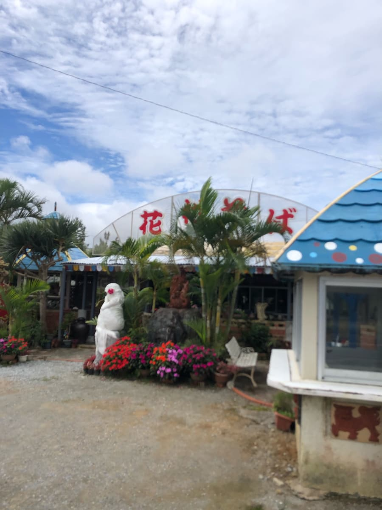
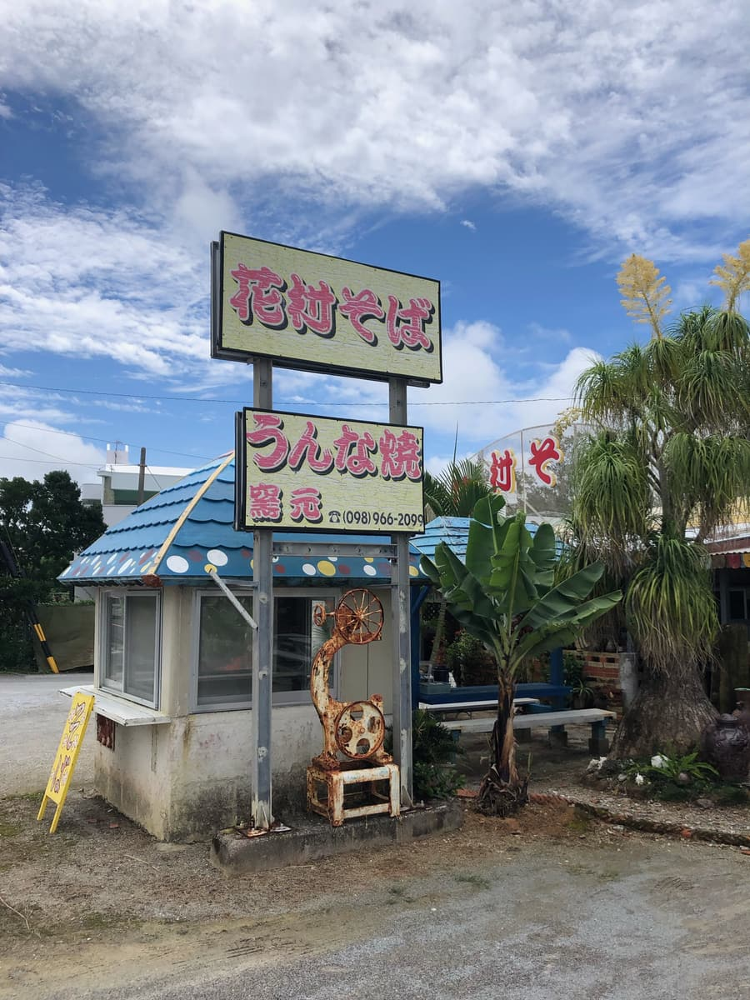
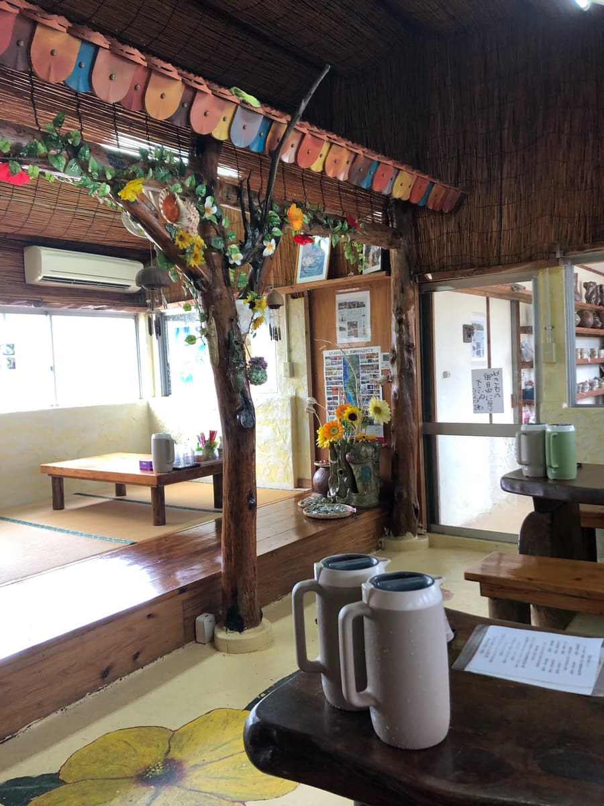
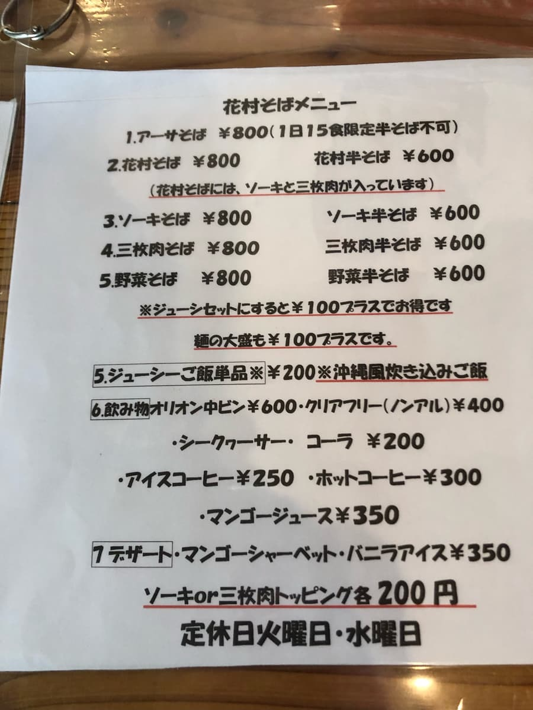
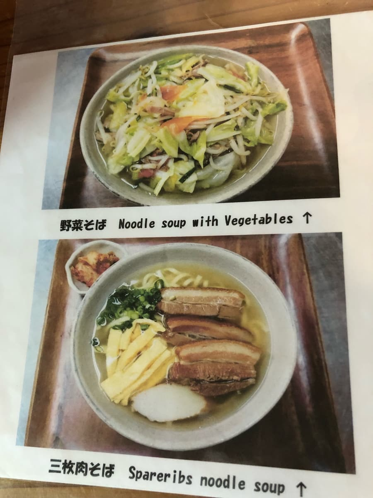
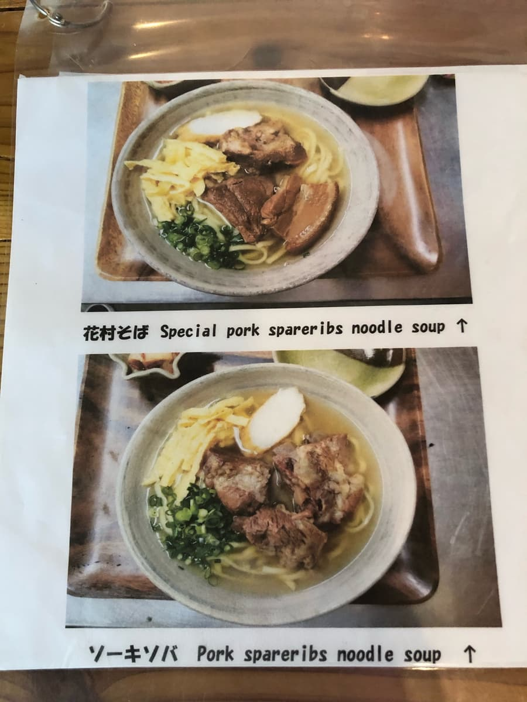
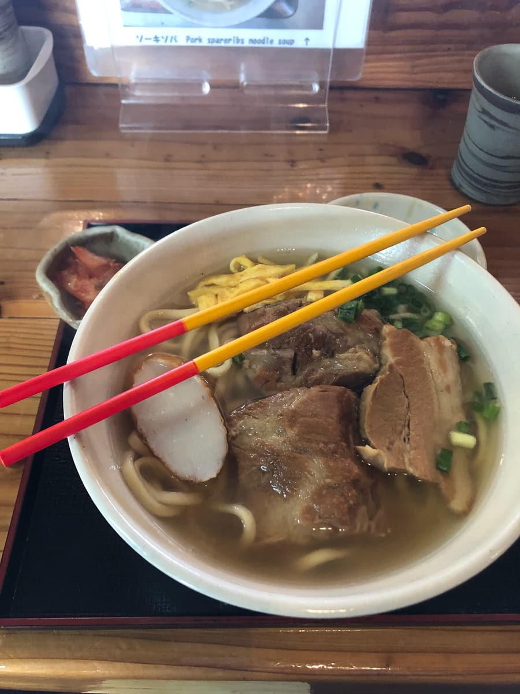
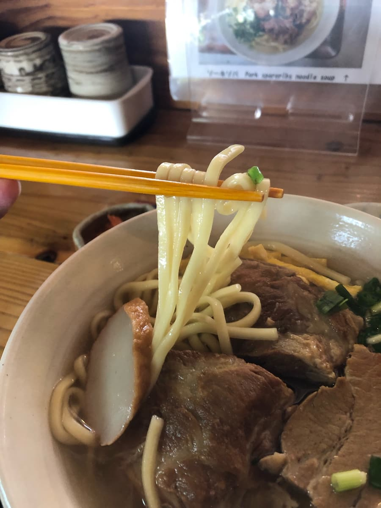
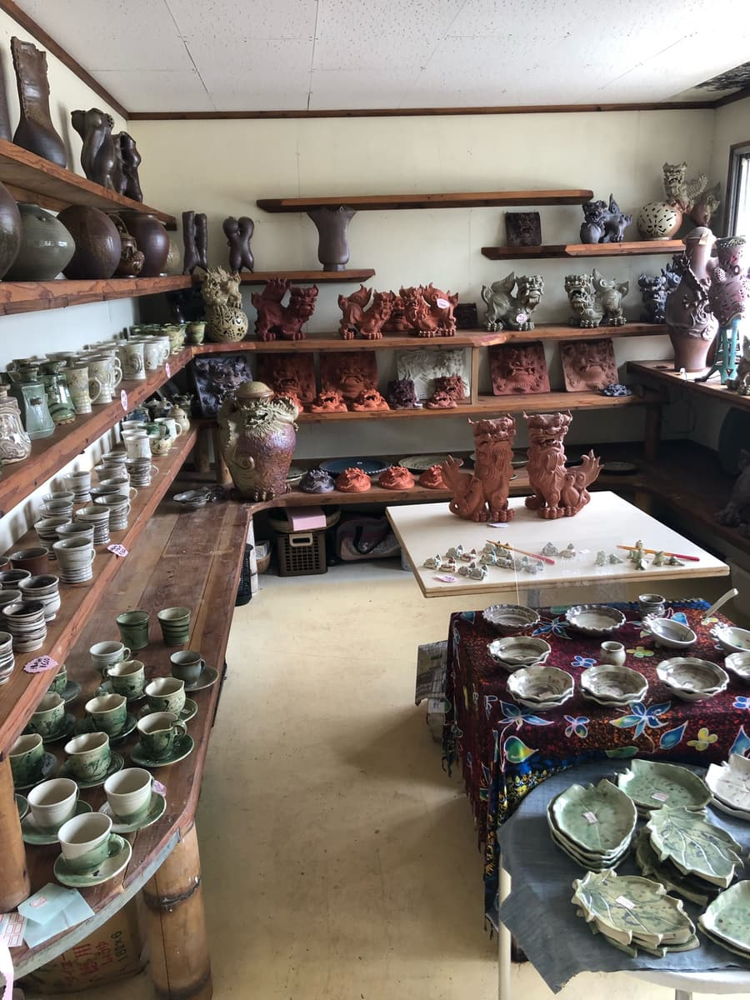

※이 글은 AI(Claude 3.5 sonnet)에게도 작성을 부탁하고, 일부를 제가 직접 덧붙여 업데이트했습니다ㅋ
2024년 6월에 먹었습니다😄
이번에는 온나손 세라가키에 있는 '하나무라 소바'를 소개합니다. 파란 하늘과 바다에 둘러싸인 절경 포인트에서, 몸도 마음도 힐링되는 오키나와 소바와의 만남이 있었어요.🌴


먼저 눈에 들어오는 것은 파란 하늘에 돋보이는 '하나무라 소바' 간판이네요. 남국다운 야자수와 어우러져, 관광객 여러분에게는 여기서부터 이미 오키나와 기분이 최고조가 될 것 같아요🌺
가게 안에 들어가면 나무의 따스함이 느껴지는 차분한 분위기. 메뉴를 보니, 역시 간판 메뉴로 보이는, 가게 이름과 같은 '하나무라 소바'를 주문하지 않을 수 없네요.🤤




자, 기다리고 기다리던 '하나무라 소바'의 등장입니다!🎉

먼저 국물부터 맛봅시다. 돼지뼈, 닭, 가쓰오, 다시마 등을 합친 육수는 은은하게 돼지뼈의 풍미가 살아 있네요. 복합적인 맛이면서도 어딘가 그리움이 느껴지는 부드러운 맛입니다. 뭐라 말할 수 없는 행복감에 감싸이네요.😌

다음은 면을 맛봅시다. 중간 굵기의 스트레이트 면은 적당히 부드럽네요. 오키나와 소바다운 식감으로, 국물과의 궁합도 최고입니다. 젓가락으로 들어 올린 면의 윤기에 저도 모르게 넋을 잃게 되네요.😍
그리고 재료에도 주목. 삼겹살 조림(산마이니쿠)과 돼지갈비(소키) 모두 부드럽게 푹 조려져 있네요. 고기의 감칠맛이 입안 가득 퍼집니다. 어묵(가마보코)과 송송 썬 파도 곁들여져 색감도 선명하네요.🥩🥕
솔직히 말하면, 맛은 '아주아주 평범'하다고 할 수 있을지도 몰라요. 하지만 관광지 온나손이라는 입지의 장점이 '하나무라 소바'의 매력을 몇 배로 끌어올리고 있네요.
가게 안을 둘러보니 관광객으로 북적이고 있어요. 재미있게도, 웨트슈트를 입은 채 다이빙을 마치고 온 듯한 손님이 야외 테이블에서 오키나와 소바를 즐기는 모습도. 바다 쪽 국도변은 바다로 되어 있지만, 도로를 따라 나무가 심어져 있어서 가게에서 바다가 직접 보이지는 않아요. 그래도 오키나와다운 광경에 저절로 미소가 지어지네요.🏊♂️😄
사실 '하나무라 소바'에는 또 하나의 매력이 있어요. 가게 옆에 오키나와 전통 공예품을 다루는 공방이 함께 있답니다.🏺

소바 가게이면서도 시사나 도자기 등 오키나와다운 물건들이 빼곡하게 진열되어 있어요. 오키나와 소바를 실컷 맛본 뒤에는 느긋하게 기념품을 고르는 것도 추천해요.🛍️
평가(9점/15점): '하나무라 소바'의 오키나와 소바, 어떠셨나요? 절경 로케이션과 오키나와 문화를 즐길 수 있는 멋진 가게네요.😊 종합적으로 보면 맛은 평범하지만, 좋은 입지와 함께 있는 공방이 큰 매력이에요.🌊🏺 관광으로 오셨을 때 꼭 들러 보세요! 근처에 제가 추천으로 소개한 '나카무라 소바'가 있는데, 그쪽이 붐빌 때는 이곳은 어떠세요? 느긋하게 오키나와 기분을 만끽할 수 있을 거예요😄
면: ★★★☆☆（3）
수프: ★★★☆☆（3）
토핑: ★★★☆☆（3）